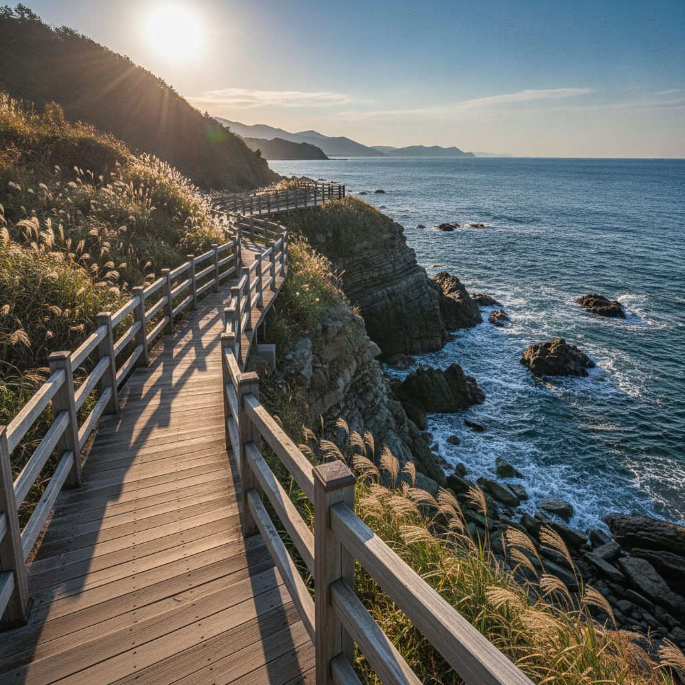
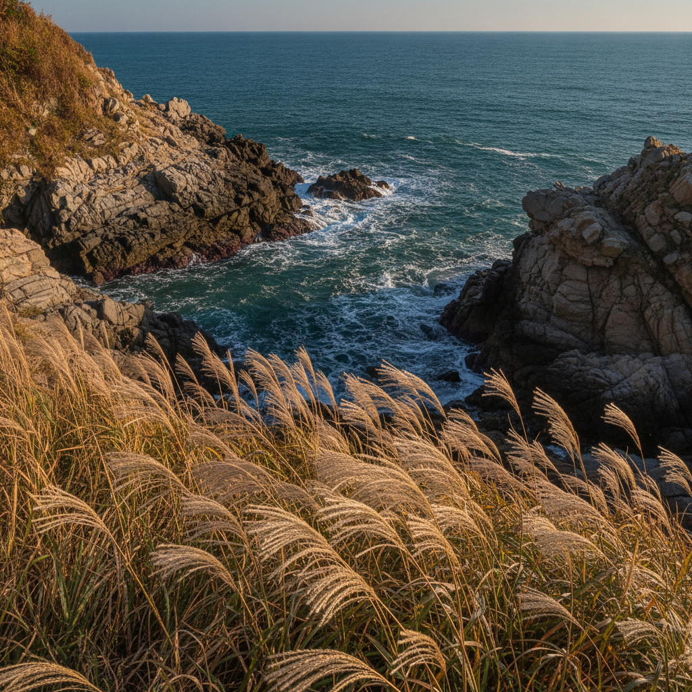
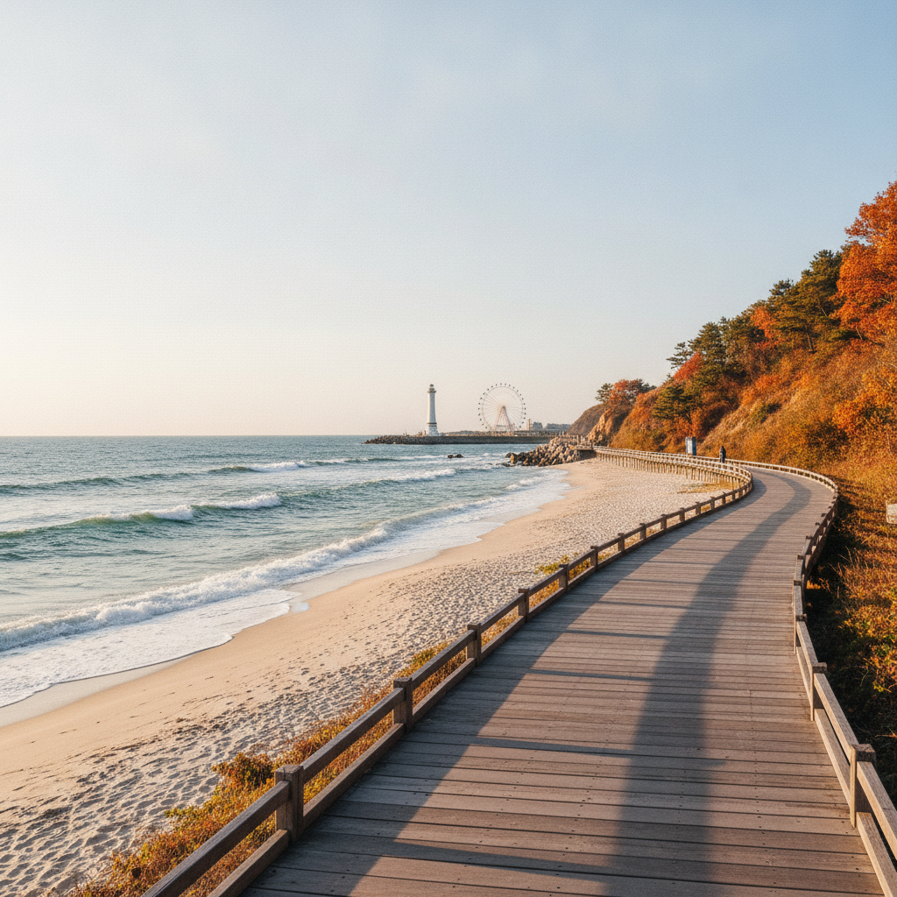

속초 외옹치 바다향기로 초가을 산책 — 해안 억새·둘레길 소요시간과 주차 비교
속초 외옹치 바다향기로는 65년 동안 민간인 출입이 통제되다 개방된 해안 비경 산책로로, 외옹치항에서 외옹치해수욕장까지 편도 1.74km(소요시간 약 35분)에 걸쳐 에메랄드빛 동해와 기암괴석을 품고 있습니다.
9월 하순부터 10월 초순에는 해안 절벽을 따라 피어난 은빛 억새가 푸른 파도와 절묘하게 어우러지며, 입장료는 무료이고 연중 상시 개방(기상 악화 시 통제)됩니다.
출발 기점인 외옹치항 주차장(무료·한적함)과 종점인 외옹치해수욕장 주차장(무료·대관람차 연계)의 특성을 비교하고, 동해안 최고의 가을 해안 트레킹 팁을 확인해보세요.

푸른 동해와 해안 기암괴석을 따라 이어지는 외옹치 바다향기로 해안 데크길 / AI 제작 이미지
01 | 65년 만에 열린 속초 해안 비경 — 외옹치 바다향기로의 매력
강원도 속초시 대포동에 위치한 외옹치는 1953년 휴전 이후 1968년 무장공비 침투 사건 등으로 인해 수십 년 동안 민간인의 접근이 엄격히 금지되었던 군사 경계구역이었습니다. 철책 너머로 숨겨져 있던 천혜의 해안선이 2018년 비로소 '바다향기로'라는 이름으로 세상에 모습을 드러냈습니다.
65년 동안 인위적인 개발이 차단되었던 덕분에 파도에 깎인 웅장한 해안 기암괴석과 원시 해송 군락, 맑고 투명한 에메랄드빛 바다가 그대로 보존되어 있습니다. 해안 절벽을 따라 정교하게 가설된 목재 데크로드를 걷는 내내 시원한 바다 내음과 부서지는 파도 소리가 오감을 일깨웁니다.
특히 9월에서 10월로 넘어가는 초가을에는 한여름의 습한 공기가 사라지고 청명한 동해 특유의 높은 하늘과 서늘한 바닷바람이 불어와 걷기 여행을 즐기기에 일 년 중 가장 완벽한 쾌적함을 선사합니다.
02 | 외옹치 바다향기로 4개 테마 구간과 도보 소요시간
외옹치 바다향기로는 총연장 1.74km(외옹치 구간 890m + 속초해수욕장 구간 850m)로 구성되어 있습니다. 이 중 핵심이자 풍경이 가장 수려한 외옹치 구간은 4개의 다채로운 테마 산책로로 나누어져 있습니다.
| 구간 명칭 | 주요 풍경 및 특징 | 구간 거리 및 체류시간 |
|---|
| 대나무 명상길 | 사시사철 푸른 해송과 대나무 숲이 바람에 서걱이는 힐링 숲길 | 약 250m (도보 약 5분) |
| 하늘 데크길 | 절벽 위에서 동해 수평선을 가장 넓게 조망하는 전망 명당 데크 | 약 230m (도보 약 8분) |
| 안보 체험길 | 과거 무장공비 침투 흔적과 군사 철책 일부를 보존한 역사 교육의 길 | 약 150m (도보 약 5분) |
| 암석 관찰길 | 파도에 침식된 신기한 기암괴석과 갯바위 낚시 풍경이 펼쳐지는 해안길 | 약 260m (도보 약 10분) |
보통 성인 걸음 기준으로 외옹치항에서 외옹치해수욕장까지 편도 약 30분에서 35분 정도 소요됩니다. 왕복으로 걷거나 속초해수욕장 송림까지 연계할 경우 1시간 10분에서 1시간 30분 정도의 여유를 잡고 일정을 계획하는 것이 좋습니다. 전 구간이 계단과 평탄한 목재 데크로 이루어져 있어 남녀노소 누구나 가벼운 차림으로 산책할 수 있습니다.
03 | 해안 절벽을 따라 피어난 은빛 가을 억새와 동해 파도
초가을 외옹치 바다향기로의 또 다른 숨은 매력은 해안 억새 군락입니다. 내륙의 높은 산이나 평야에서 보는 억새와 달리, 바다 절벽 틈바구니와 산책로 언덕배기에 피어난 은빛 억새는 짙푸른 동해 바다와 극적인 대조를 이룹니다.
9월 하순부터 꽃대를 활짝 피우기 시작한 억새는 바닷바람을 맞을 때마다 마치 은빛 파도가 일렁이듯 춤을 춥니다. 억새 너머로 하얗게 부서지는 파도와 멀리 조도(새섬)를 배경으로 담아내는 사진은 가을 속초 여행에서만 건질 수 있는 특별한 명장면입니다.
하늘 데크길 전망대에 서서 바라보는 해안선은 기암절벽, 은빛 억새, 짙푸른 바다의 3단 조화가 어우러져 한 폭의 진경산수화를 감상하는 듯한 깊은 감동을 줍니다.

해안 갯바위와 억새가 어우러진 외옹치 암석 관찰길의 초가을 정취 / AI 제작 이미지
04 | 외옹치항 vs 외옹치해수욕장 주차장 위치 및 요금 비교
바다향기로를 방문할 때 가장 먼저 고민하게 되는 것이 출발 지점 선택입니다. 산책로 양 끝에 위치한 외옹치항과 외옹치해수욕장은 주차 여건과 주변 분위기가 상반되므로 본인의 여행 스타일에 맞추어 선택해야 합니다.
| 구분 | 외옹치항 공영주차장 (남측 기점) | 외옹치해수욕장 공영주차장 (북측 기점) |
|---|
| 주차 면수 | 약 70~80대 (소규모 항구) | 약 150대 이상 (해수욕장 대형 주차장) |
| 주차 요금 | 무료 상시 운영 | 무료 상시 운영 |
| 주말 혼잡도 | 비교적 한적하고 여유로움 | 속초해수욕장·대관람차 연계로 혼잡함 |
| 주변 인프라 | 외옹치 활어회센터, 낚시 방파제 | 카페거리, 편의점, 백사장 산책로 |
| 추천 여행객 | 조용한 힐링 산책과 신선한 회 식사를 원할 때 | 속초아이 대관람차 관람 및 카페 이용 희망 시 |
주말 주차 스트레스를 피하고 싶다면 외옹치항 공영주차장을 출발점으로 삼는 것을 적극 추천합니다. 만약 해수욕장 쪽 카페거리나 대관람차(속초아이)를 함께 즐기고자 한다면 외옹치해수욕장 주차장을 이용하는 것이 편리합니다. 두 곳 모두 주차비는 무료입니다.
05 | 드라마 촬영지와 안보체험길 역사적 발자취
외옹치 바다향기로는 인기 드라마 남자친구의 메인 촬영지로 널리 알려지며 전국적인 명성을 얻었습니다. 주인공들이 파도 소리를 들으며 애틋한 대화를 나누던 목재 데크 전망대에는 현재 기념 팻말과 포토존이 설치되어 있어 연인들의 필수 기념사진 코스가 되었습니다.
한편 산책로 중간의 안보체험길에 이르면 분위기가 사뭇 진지해집니다. 수십 년 동안 민간인의 접근을 가로막았던 실제 철책선 일부와 군 초소 벙커가 보존되어 있으며, 분단의 아픔과 평화의 소중함을 되새길 수 있는 사진 자료들이 전시되어 있습니다.
철책 사이로 내다보이는 아름다운 바다 풍경은 평화로운 일상의 소중함을 일깨워주며, 단순한 자연 풍경을 넘어 역사적 의미를 함께 곱씹어볼 수 있는 깊이 있는 인문학적 공간을 제공합니다.
06 | 속초해수욕장과 대포항을 잇는 동해 바다 걷기 코스
체력이 허락한다면 외옹치 구간에 머무르지 않고 북쪽의 속초해수욕장과 남쪽의 대포항까지 잇는 해안 트레킹 코스를 완성해볼 수 있습니다.
속초 명품 해안 힐링 걷기 코스 (약 3.5km, 1시간 40분 소요)
1단계: 대포항 보도육교 & 수변 데크길
둥근 원형의 대포항을 따라 조성된 친수 산책로를 걸으며 갓 잡아 올린 해산물을 구경하고 빨간 등대 방파제 감상.
2단계: 외옹치항 진입로 및 방파제
대포항에서 해안 도로를 따라 도보 10분 이동하여 고즈넉하고 아담한 외옹치항 도착.
3단계: 외옹치 바다향기로 종주
대나무 명상길, 하늘 데크길, 안보체험길, 암석 관찰길을 차례로 통과하며 동해안 해안 절벽 비경 만끽.
4단계: 속초해수욕장 송림 산책 및 포토존
바다향기로 종점인 외옹치해변에서 속초해수욕장 백사장을 따라 걸으며 헤드랜드 조형물과 속초아이 감상.
이 코스는 해안 도로와 숲길, 백사장이 번갈아 나타나 지루할 틈이 없으며, 동해안의 다양한 얼굴을 한 번에 만끽할 수 있는 걷기 명작입니다.

외옹치해변과 속초해수욕장이 시원하게 연결되는 해안 산책로 전경 / AI 제작 이미지
07 | 속초 초가을 드라이브 루트 — 영금정부터 외옹치까지
속초의 바다를 차 안에서도 만끽하고 싶다면 북쪽의 영금정에서 출발하여 동명항, 속초항, 청초호 해상 보도교를 지나 외옹치까지 이어지는 해안 드라이브를 추천합니다.
영금정 해돋이정자에서 거친 파도가 바위에 부딪히는 거문고 소리를 감상한 뒤, 7번 국도 해안 도로를 타고 남쪽으로 내려오면 속초 시가지와 바다가 어우러진 활기찬 풍경이 차창을 채웁니다.
청초호 주변 설악대교와 금강대교를 차례로 건널 때는 푸른 청초호수와 멀리 설악산 능선이 파노라마처럼 펼쳐져 가슴이 뻥 뚫리는 시각적 쾌감을 선사합니다. 대교를 지나 곧장 직진하면 5분 만에 외옹치 해안 입구에 도달하므로 이동 동선이 매우 매끄럽습니다.
08 | 걷기 후 즐기는 별미 — 외옹치 활어회와 속초 아바이순대
외옹치 트레킹을 마친 뒤에는 출출해진 배를 채워줄 속초의 대표 먹거리들이 여행객을 기다립니다.
외옹치항 출발 기점 바로 옆에는 소박한 외옹치 활어회센터가 있습니다. 대형 어시장보다 규모는 작지만 현지 해녀와 어선들이 직접 조업해 온 광어, 우럭, 참가자미를 합리적인 가격에 맛볼 수 있습니다. 바다 바로 앞에서 갓 썰어낸 쫄깃한 회 한 접시와 얼큰하고 개운한 서더리 매운탕은 트레킹의 피로를 단번에 날려줍니다. 2인 기준 5만~7만 원 안팎으로 자연산 회를 푸짐하게 즐길 수 있습니다.
또한 차로 10분 거리인 청호동 아바이마을로 이동하면 쫄깃한 오징어순대와 담백한 명태식해, 뜨끈한 아바이 순대국을 만날 수 있습니다. 1만 원 안팎의 순대국 한 그릇에 오징어순대(1만 5천 원 안팎)를 곁들이면 속초 특유의 실향민 음식 문화를 제대로 경험할 수 있습니다.
09 | 파도와 바닷바람 대비 — 초가을 해안 산책 필수 복장과 팁
동해안 해안 절벽길은 탁 트인 바다와 마주하고 있어 계절과 상관없이 바람이 매우 강하게 붑니다. 특히 초가을에는 기온은 적당하더라도 강풍으로 인해 체감 온도가 급격히 낮아질 수 있습니다.
산책 전 방풍 기능이 있는 얇은 윈드브레이커나 가디건을 필수로 준비하세요. 모자를 착용할 경우 강한 해풍에 날아가지 않도록 턱끈이 달린 모자를 쓰거나 단단히 고정해야 합니다.
바다향기로는 암석 절벽에 부딪힌 파도가 미세한 물보라로 데크 위에 튈 수 있으므로 바닥이 미끄러울 때가 있습니다. 굽이 높은 구두보다는 미끄럼 방지 홈이 파인 편안한 운동화를 착용해야 안전사고를 예방할 수 있습니다. 태풍이나 풍랑주의보 발령 시에는 탐방로 출입이 전면 통제되므로 방문 전 속초시청 관광과나 바다향기로 관리사무소에 개방 여부를 사전 확인하고 출발하세요.
#속초외옹치바다향기로
#외옹치바다향기로소요시간
#외옹치항주차팁
#속초가을가볼만한곳
#외옹치해안억새
#속초당일치기트레킹
#속초드라이브코스
#속초해수욕장산책로
#동해안가을바다여행
#외옹치둘레길코스